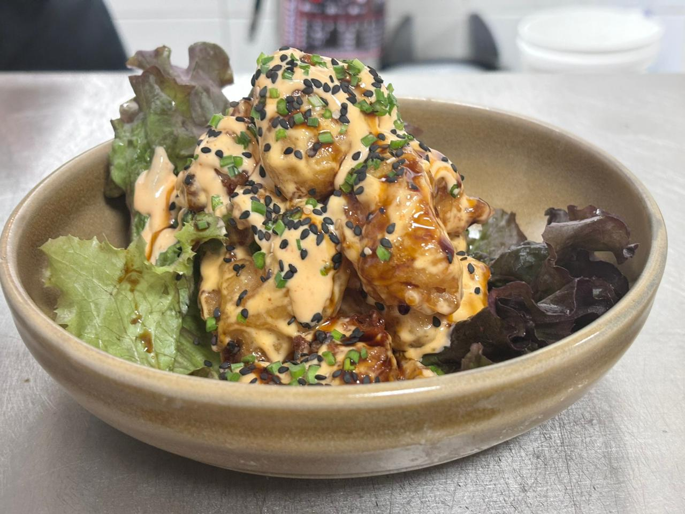

Camaron roca

Camarones roca empanizados: camarones grandes, sazonados y empanizados en harina, huevo y pan rallado, luego fritos hasta dorar. Se sirven crujientes con aderezo picante de mayonesa, salsa de tomate, ajo y limón. ¡Una delicia marina!
Ingredientes
Para los camarones:
- 1 kilogramo de camarones grandes, pelados y desvenados
- 2 cucharadas de aceite de oliva
- 4 dientes de ajo picados
- 1 cucharadita de pimienta negra
- 1 cucharadita de sal
- 1/2 cucharadita de pimentón dulce
- 1/2 cucharadita de pimentón picante (opcional)
- Zumo de 1 limón
Para la salsa de tomate
- 2 cucharadas de aceite de oliva
- 1 cebolla grande, picada
- 4 dientes de ajo, picados
- 800 g de tomates triturados en lata
- 1 cucharadita de azúcar
- 1 cucharadita de sal
- 1/2 cucharadita de pimienta negra
- 1/2 cucharadita de pimentón dulce
- 1/4 cucharadita de pimentón picante (opcional)
- 1 cucharadita de orégano seco
- 1 cucharada de pasta de tomate
- 1/2 taza de vino blanco (opcional)
- Perejil fresco picado para decorar
Procedimiento
- En un tazón grande, mezcla los camarones con el aceite de oliva, el ajo picado, la pimienta negra, la sal, el pimentón dulce, el pimentón picante (si se usa) y el zumo de limón. Deja marinar durante al menos 30 minutos en el refrigerador.
- Mientras tanto, prepara la salsa de tomate. Calienta el aceite de oliva en una sartén grande a fuego medio. Agrega la cebolla picada y cocina hasta que esté transparente, aproximadamente 5 minutos. Agrega el ajo picado y cocina por un minuto más.
- Agrega los tomates triturados, el azúcar, la sal, la pimienta negra, el pimentón dulce, el pimentón picante (si se usa), el orégano seco, la pasta de tomate y el vino blanco (si se usa). Cocina a fuego lento durante unos 15-20 minutos, revolviendo ocasionalmente, hasta que la salsa espese ligeramente.
- Mientras tanto, calienta una sartén grande a fuego medio-alto. Agrega los camarones marinados y cocina durante 2-3 minutos por cada lado, hasta que estén rosados y cocidos por completo.
- Sirve los camarones sobre la salsa de tomate caliente, espolvorea con perejil fresco picado y sirve caliente. Puedes acompañar con arroz blanco o pan crujiente para mojar en la salsa.
Home